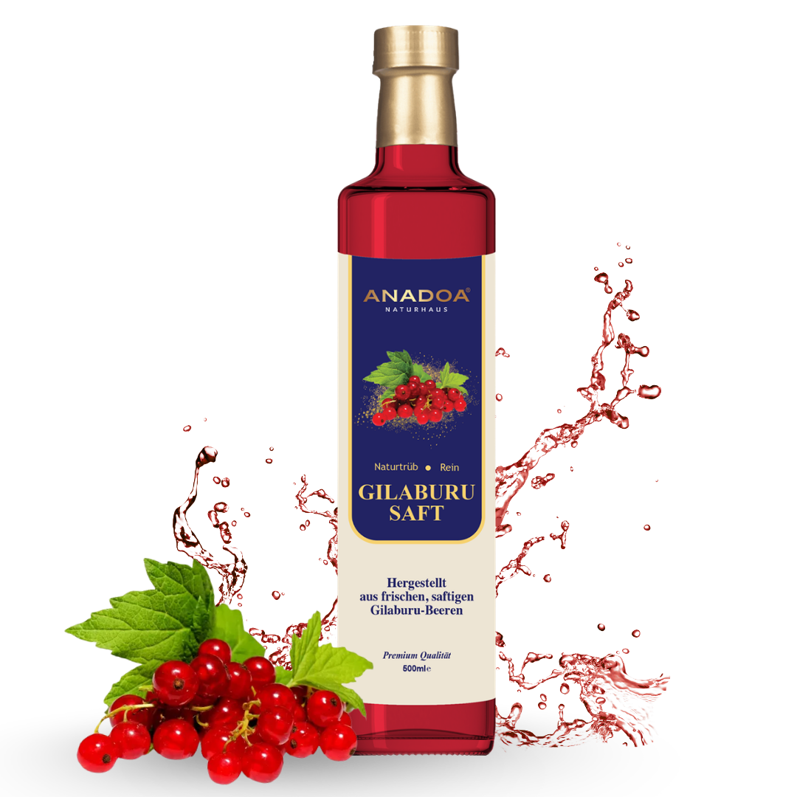

Die tief verwurzelte Geschichte hinter dem Gilaburu Saft
Um den Gilaburu Saft ranken sich in der anatolischen Volksmedizin viele Legenden und jahrhundertealte Traditionen. Die Pflanze, botanisch als Viburnum opulus oder im Deutschen als Gemeiner Schneeball bekannt, ist ein robuster Strauch, der an Flussufern und in den feuchten, vulkanischen Höhenlagen Zentralanatoliens, insbesondere in der Region um Kayseri, wächst. Wenn der Herbst einzieht, leuchten die Sträucher über und über mit rubinroten, saftigen Beeren, die in dichten Dolden hängen. Genau aus diesen Beeren wird der berühmte Gilaburu Saft gewonnen.
Die anatolischen Bauern wussten lange vor der modernen Medizin um die erstaunliche Kraft dieser Früchte. Die Beeren wurden erst nach dem ersten Frost geerntet, weil die Kälte die extrem bitteren Stoffe milderte. Danach wurden die Beeren wochenlang in Quellwasser eingelegt ("mazeriert"), um sie weich und genießbar zu machen, bevor sie in mühsamer Handarbeit zum Gilaburu Saft gepresst wurden. Dieser Gilaburu Saft war und ist kein gewöhnliches Erfrischungsgetränk, sondern wurde stets als "Medizin aus der Flasche" betrachtet, die in keinem Haushalt fehlen durfte, wenn der Winter vor der Tür stand oder urologische Beschwerden auftraten.
Wie echter Gilaburu Saft im Körper wirkt
Der Geschmack von echtem Gilaburu Saft ist ein Erlebnis für sich: extrem säuerlich, herb und mit einer adstringierenden (zusammenziehenden) Note, die sofort verrät, dass man hier ein Konzentrat reiner Pflanzenstoffe zu sich nimmt. Die beeindruckende Wirkung von Gilaburu Saft basiert auf seinem einzigartigen chemischen Profil. Der Gilaburu Saft ist extrem reich an Vitamin C, verschiedenen organischen Säuren (wie Valeriansäure), starken Antioxidantien, Flavonoiden und spezifischen Gerbstoffen.
Die in hohem Maße im Gilaburu Saft vorhandene Valeriansäure (Baldriansäure) ist bekannt für ihre krampflösende und entspannende Wirkung auf die glatte Muskulatur im Körper. Dies erklärt, warum der Gilaburu Saft in der traditionellen Anwendung so oft bei kolikartigen Beschwerden herangezogen wird. Zudem wirken die enthaltenen Flavonoide im Gilaburu Saft stark harntreibend (diuretisch). Das bedeutet, der Gilaburu Saft regt die Nieren dazu an, mehr Flüssigkeit auszuscheiden, was zu einer natürlichen, mechanischen "Spülung" der gesamten ableitenden Harnwege führt. Diese reinigende Wirkung macht den Gilaburu Saft so unverzichtbar in der Naturheilkunde.
Gilaburu Saft für Nieren und den urologischen Trakt
Wenn man in Anatolien jemanden nach dem Hauptanwendungsgebiet von Gilaburu Saft fragt, kommt sofort die Antwort: "Für die Nieren!". Der Gilaburu Saft hat sich in der Volksmedizin seinen legendären Ruf als stärkendes Tonikum für das gesamte urologische System erarbeitet. Bei Menschen, die zu Blasenentzündungen, Nierengrieß oder allgemein zu Beschwerden im Harnwegsbereich neigen, gilt eine Kur mit Gilaburu Saft als das traditionelle Mittel der ersten Wahl.
Durch die starke diuretische Wirkung des Gilaburu Safts werden die Harnwege intensiv durchspült. Dies erschwert es Bakterien, sich an den Wänden der Blase festzusetzen. Gleichzeitig entfaltet der Gilaburu Saft durch seine organischen Säuren eine milieuregulierende Eigenschaft im Urin. Wenn sich Nierengrieß anbahnt, schwören traditionelle Heiler darauf, dass die im Gilaburu Saft enthaltenen Säuren dabei helfen können, bestimmte kristalline Strukturen aufzulösen, während die krampflösende Wirkung der Valeriansäure den schmerzfreien Abgang winziger Partikel erleichtern soll. Aus diesem Grund wird der Gilaburu Saft oft parallel zu schulmedizinischen Behandlungen als kraftvolle diätetische Unterstützung getrunken.
Die richtige und kurmäßige Anwendung von Gilaburu Saft
Ein so potentes Naturheilmittel wie der Gilaburu Saft sollte mit Respekt und Sachverstand angewendet werden. Er ist nicht dafür gedacht, literweise als Durstlöscher getrunken zu werden. Die anatolische Tradition sieht für den Gilaburu Saft stets eine kurmäßige Anwendung vor. Das bedeutet, dass der Gilaburu Saft über einen Zeitraum von drei bis vier Wochen täglich getrunken wird, um dem Körper dann wieder eine Pause zu gönnen.
Während einer solchen Kur empfehlen wir im Anadoa Naturhaus, zweimal täglich – idealerweise morgens nüchtern und abends vor dem Schlafen – ein Glas (etwa 100 ml) Gilaburu Saft zu trinken. Da 100% purer Gilaburu Saft sehr sauer ist und einen empfindlichen Magen reizen könnte, kann der Gilaburu Saft problemlos mit stillem Wasser im Verhältnis 1:1 verdünnt werden. Wer die Herbe des Gilaburu Safts abmildern möchte, darf gerne einen halben Teelöffel echten Honig einrühren. Niemals sollte der Gilaburu Saft jedoch mit industriellem Zucker versetzt werden, da dies die therapeutische Ausrichtung des Saftes im Körper stören würde.
Warum reiner Anadoa Gilaburu Saft so selten ist
Wer auf dem europäischen Markt nach Gilaburu Saft sucht, wird oft enttäuscht. Das, was häufig als Gilaburu Saft angeboten wird, ist nichts weiter als stark verdünntes Wasser mit 10% Fruchtanteil, Unmengen an Zucker und künstlichen Aromen. Solche Getränke haben mit dem echten Gilaburu Saft der Naturheilkunde absolut nichts gemein.
Der Gilaburu Saft vom Anadoa Naturhaus ist ein kompromissloses Premiumprodukt. Wir verwenden ausschließlich handgepflückte, wild wachsende Beeren aus vulkanischen Böden. Nach dem ersten Frost werden diese nach alter Tradition in reinstem Quellwasser mazeriert. Wenn wir unseren Gilaburu Saft pressen, tun wir dies langsam und extrem schonend, ohne jegliche Hitzeeinwirkung (Pasteurisierung über 80 Grad), um die hitzeempfindlichen Vitamine nicht zu zerstören. Unser Gilaburu Saft enthält 0% zugesetzten Zucker, 0% Wasserverdünnung und 0% Konservierungsstoffe. Es ist 100% pures, lebendiges Beerenblut. Da dieser aufwendige Prozess nur in sehr kleinen Chargen durchgeführt werden kann, ist unser originaler Gilaburu Saft eine echte Rarität für Kenner der Naturheilkunde.
Häufig gestellte Fragen (FAQ)
Wie schmeckt
echter Gilaburu Saft?
Da echter Gilaburu Saft ohne jegliche Zusätze oder Zucker gepresst wird, hat er einen sehr charakteristischen, stark säuerlichen und leicht herben Geschmack. Wer ihn pur nicht mag, kann ihn gerne mit Wasser verdünnen oder leicht süßen.
Wann ist die
beste Zeit, um Gilaburu Saft zu trinken?
Für die optimale Wirkung auf den urologischen Trakt empfehlen wir in der traditionellen Naturheilkunde, morgens und abends jeweils ein kleines Glas (ca. 100ml) Gilaburu Saft etwa 30 Minuten vor den Mahlzeiten zu trinken.
Hilft
Gilaburu Saft bei Nierensteinen?
In der anatolischen Volksmedizin wird Gilaburu Saft seit Jahrhunderten traditionell bei Nierengrieß und zur Unterstützung der Nierenfunktion eingesetzt. Wissenschaftliche Studien untersuchen derzeit die spasmolytischen (krampflösenden) Eigenschaften der Beere in diesem Zusammenhang.
Darf man
Gilaburu Saft dauerhaft trinken?
Wir empfehlen eine kurmäßige Anwendung des Gilaburu Safts. Das bedeutet, man trinkt ihn täglich für etwa 3 bis 4 Wochen und macht danach eine Pause von einigen Wochen, bevor man bei Bedarf eine neue Kur beginnt.
Muss der
Gilaburu Saft im Kühlschrank gelagert werden?
Solange die Flasche ungeöffnet ist, kann der Gilaburu Saft an einem kühlen, dunklen Ort (z.B. im Vorratsschrank) gelagert werden. Nach dem Öffnen MUSS er jedoch zwingend im Kühlschrank aufbewahrt und innerhalb von 5-7 Tagen verbraucht werden.